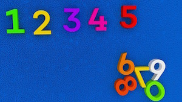
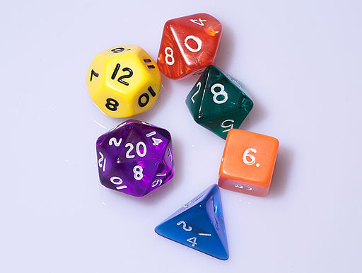

프로그래밍과 문제해결
정수
바보는 궁금해하고, 현명한 사람은 물어본다.
The fool wonders, the wise man asks.
— Benjamin Disraeli
훈련 임무
학생 교안을 클릭한다. 선생님은 학생들이 교안을 채워넣도록 도와 준다.
고급(교안): 문자열과 정수는 매우 다른 자료형이다; 문자열을 사용해서 텍스트를 생성하는 반면에, 정수를 사용해서 세거나, 수학문제를 푼다. 다음과 같은 것을 작업하는 것은 의미가 없다:
result = "hello" + 5종종, 정수를 포함하는 문자열을 수학 계산을 하려고 정수로 변환하거나, 반대로 숫자를 문자열로 변환한다. str() 과 int() 함수를 사용해서 자료형을 다른 자료형으로 변환할 수 있다, 즉, str() 함수는 무언가를 문자령로 int() 함수는 무언가를 정수형으로 변환한다. 따라서, 다음은 작동하지 않는 예제다.
result = 5 + "10" # 정수와 문자열을 더하면 작동하지 않는다.
msg = "I am " + 10 + " years old" # 붙이기 기능은 문자열만 작동한다.하지만, 다음은 작동한다:
result = 5 + int("10") # int("10") 값은 정수 10이 된다.
msg = "I am " + str(10) + " years old" # str(10) 값은 문자열 "10" 이 된다.3학년 - 파이썬으로 하는 산수
파이썬은 수학에 무척 능하다; 파이썬에게 1자리 숫자를 더하는 계산보다 10자리 숫자를 더하는 계산이라고 더 어려운 것은 아니다; 동일한 계산이 뺄셈, 곱셈, 나눗셈에도 적용된다. 따라서, 파이썬이 숙제를 검사하는 프로그램을 작성한다.
프로그램 시작부분에 두 숫자를 두 변수에 집어넣는다. 예를 들어, number_1, number_2.
number_1 = 5
number_2 = 3그리고 나서, 프로그램이 다음을 출력하게 한다:
5 + 3 = 8
5 - 3 = 2
3 - 5 = -2
5 * 3 = 15
해답: 보여주기
4학년 - 이빨 요청 1
이빨 요정은 아이들 이빨이 빠지면 선물을 놓고 간다; 종종 선물로 아이 베개 밑에 돈을 놓아 둔다. 만약 이빨 하나당 $2 달러로, 이빨이 20개 있다면, 이빨 요정에서 아이가 얼마나 받을 수 있는지 알려주는 프로그램을 작성한다.
프로그램 시작부분에 변수로 이빨 갯수와 선물 금액을 지정한다. 그리고, 결과를 출력하는 프로그램을 작성한다:
teeth = 20
present = $2
total = $40이제 어려운 문제로 가자: 일생동안 일부 상어는 이빨이 50,000 개가 빠진다. 여러분이 만일 이빨 50,000 개가 빠진다면 이빨요정은 얼마의 돈을 놓고 갈지 알아내시오. 만약 이빨 하나당 $2 달러 대신에 $5 달러라면 얼마의 돈을 놓고 갈까?
정답: 보여주기
5 학년 : 던젼 앤 드래곤(Dungeons and Dragons)
던젼 앤드 드래곤은 인간, 요정, 난장이 역할을 맡아 모험을 떠나는 게임이다. 흡혈귀로 가득찬 버려진 유적, 혹은 용이 지키고 있는 보물동굴을 탐험해 나간다.
드래곤 용이 먼저 여러분을 보거나, 혹은 여러분이 용을 제때 탐지할까요? 여러분이 도둑이이고 정말 뛰어난 인지능력을 보유한다면, 20면 주사위를 굴려 8이상 값이 나오면 용을 먼저탐지하고, 여러분이 팔라딘 용사라면, 대신에 먼저 용을 탐지하려면 19이상 값이 나와야 한다.
20면 주사위라고? 맞습니다… 던젼 앤 드래곤에는 4, 6, 8, 10, 20 면 주사위가 사용된다; 더젼 앤 드래곤(D&D) 주사위를 굴리는 프로그램을 작성할 것이다. a 와 b 사이 숫자를 뽑아내는데 randint(a, b) 함수를 사용한다.
# randint 함수를 사용하려면 random 라이브러리를 불러와서 메모리에 적재한다.
from random import randint
roll = randint(5,10) # randint 함수를 사용한다.상기 함수는 5,6,7,8.9,10 값 중 하나를 변수 roll에 할당한다.
다음 주사위 6개를 굴려서, 다음과 같은 형식으로 굴린 결과를 출력하는 프로그램을 작성한다:
You rolled a 2 with the 4-side die
You rolled a 5 with the 6-side die
You rolled a 3 with the 8-side die
You rolled a 10 with the 12-side die
You rolled a 13 with the 20-side die
정답: 보여주기
6학년: 1,000,000 까지 모든 숫자를 합한다.
제정신인가요? 백만은 엄청나게 큰 수라서… 제가 어떻게 백만까지 더할 수 있다고 보십니까? 그러면… 좀더 작은 숫자부터 시작해 봅시다. 6까지 모든 숫자를 더하는 것은 어떨까요? 가장 무식(?)한 방식으로 해볼까요?
1 + 2 + 3 + 4 + 5 + 6 = 21상기 방식이 동작은 하지만, 백만까지 더해나가는 것이 그다지 희망이 있어 보이지는 않는다. 실수도 저지를 수 있고 해서 말이다. 다른 숫자 위에 숫자를 쌓아보자. 변수 x 를 사용해서 모든 숫자를 더한 총합으로 표기한다; 지금 당장, 총합은 모르는 척 하자.
~ {.output} 1 2 3 4 5 + 6 —— x ~
숫자를 1에서부터 6까지 더해 x를 구하고 나서, 두번 숫자를 더하면 결과는 2x가 된다; 하지만, 한 칼럼 숫자는 거꾸로 더해 나간다; 하지만, 결과에는 차이가 나지 않는다.
1+6
2+5
3+4
4+3
5+2
+ 6+1
-------
2x모든 행이 더하면 같은 값 즉, 7이 됨에 주목한다. 본질은, 6까지 더한 것을 7번 수행했다:
7
7
7
7
7
+ 7
-----
2x상기 계산은 6 곱하기 7이 2x가 됨을 의미한다:
7 + 7 + 7 + 7 + 7 + 7 = 2x
6 * 7 = 2x그래서, 수식을 전개하면,
x = (6 * 7) / 2 # 수식을 주의깊이 살펴본다. 6과 어떤 관계가 있는가?
= 42 / 2
= 21희망이 있어 보인다. 종이와 연필을 가지고 동일한 과정을 반복하지만, 이번에는 1에서 7까지 숫자합을 구해본다.
이 기법을 사용해서 1에서 1,000,000 까지 모든 숫자 합계를 구하는 프로그램을 작성한다. 테스트로, 1에서 25,000까지 숫자 총합은 312,512,500 이 나와야 한다.
정답: 보여주기
이빨 요정(tooth fairy) - 어린 아이의 침대 머리맡에 자기전에 빠진 이를 놓아두면,이빨을 가져가고 대신에 동전을 놓고 간다는 요정↩